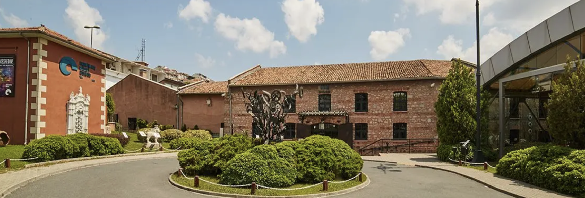

Istanbul Modern
Istanbul's first museum of modern and contemporary art. It has a nice view with busy art agenda. There are temporary and permanent exhibition galleries from different perspectives.
www.istanbulmodern.orgSalt Galata & Salt Beyoglu
It is possible to define Salt as a dynamic cultural institution for both innovative programs and researches. It is a place for gathering intersections and interactions between various disciplines. Also, members could focus on art, architecture, design and social and economic history.
www.saltonline.orgRahmi M. Koc Museums
It has an interesting museum concept with story of objects. Visitors could visit different collections of communication and transportation items, from fine art, limited editions to industrial age.
 www.rmk-museum.org.trBorusan Contemporary
It focuses on contemporary art, providing a multi-platform program of exhibitions, events and educational activities.
www.borusancontemporary.com